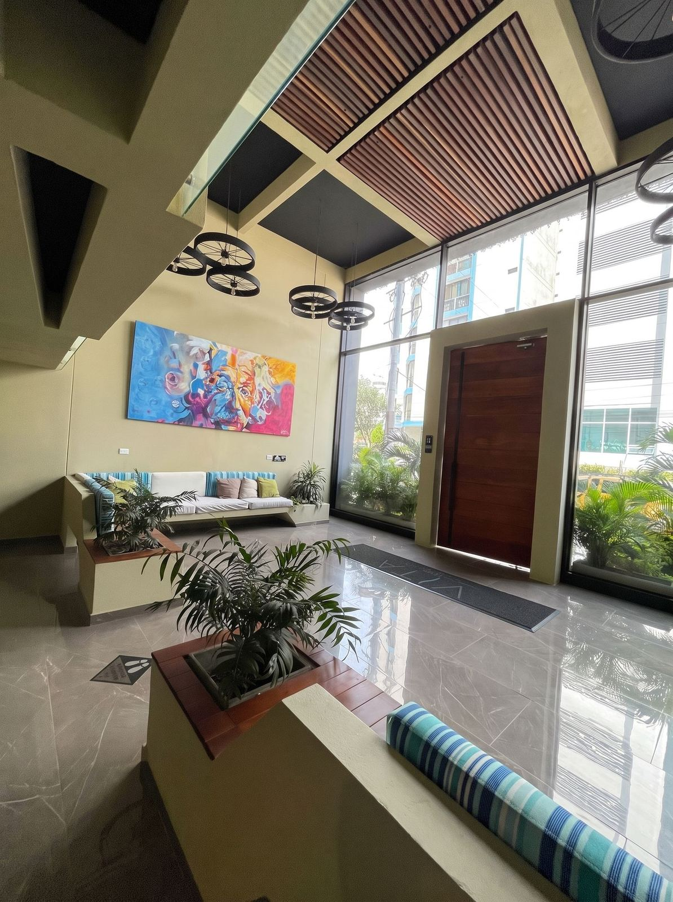

Closest stop
Berlinas · Berlinastur
Berlinas has a Rodadero office, Berlinastur, on Carrera 3 near Calle 8. It is only a block or so from the apartment, so you can walk if you travel light.

Hero photo · Arriving in Santa MartaDirections
By bus from other cities: Berlinas del Fonce, Marsol, and Expreso Brasilia all serve Santa Marta.
Closest stop
Berlinas has a Rodadero office, Berlinastur, on Carrera 3 near Calle 8. It is only a block or so from the apartment, so you can walk if you travel light.
City terminal
Marsol and Expreso Brasilia use the Santa Marta Transportation Terminal at Calle 41 #31-17. Marsol also lists a Rodadero boarding point, so check your ticket to see where your bus stops.
From the terminal
15 min
A taxi to Rodadero usually costs around 12,000 COP. Ask the driver to confirm the fare before leaving. Take a taxi from the terminal after dark.
2,300
About 2,300 COP per person. Slower, and harder with luggage.
One parking space is available for guests traveling with a car. Free parking is on the premises. Please confirm parking instructions before arrival so we can explain the designated entry and any building requirements. Do not park in spaces reserved for other residents or guests.
An exterior security camera is present. Around the building, a shirt or proper cover-up is required in shared areas, and every guest needs a wristband to enter.
When you arrive, complete the building registration first. See the check-in page for the QR code, the 18,000 COP wristband, and the lockbox.
Book Now
Getting to El Rodadero is straightforward by bus or taxi. Book this beach-view vacation rental and we’ll help with arrival tips for your Colombia holiday.